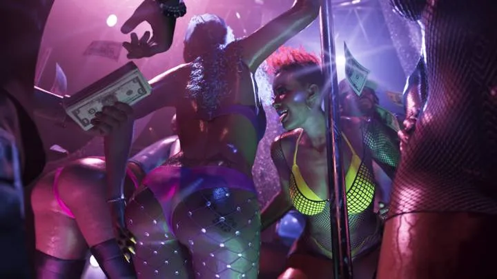
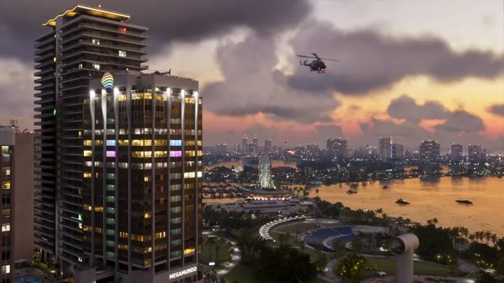
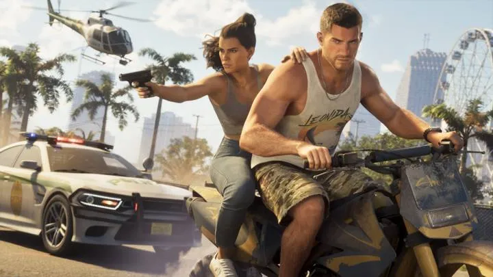

Опубликовано:
Последняя глава — самая короткая: 7 миссий, финал истории Джейсона и Лусии. Название, по нашей трактовке, отсылает к финальной реплике гангстерского фильма «Белая горячка» (1949) — «Made it, Ma! Top of the world!». После финальных титров открываются читы и чек-лист 100%, а играть в Леониде можно дальше.
Глава начинается в пентхаусе в Tequesta Retreat. Между Operation Savage Glory и Protective Custody есть короткие шаги без полноценного геймплея: разговор с адвокатом Эйбом (Honest Abe — только сцена) и оплата его услуг — $150 000 переводом в его офис через приложение BuckMe (Pay Abe’s Fee). После Protective Custody две последние миссии идут подряд, без выхода в открытый мир.
Миссии главы 5 на карте
Все миссии главы 5
| № | Миссия | За кого | О чём |
|---|---|---|---|
| 1 | Bird in the Hand ✓ | Джейсон и Лусия | Джейсон и Лусия угоняют транспорт. |
| 2 | Taking Liberties ✓ | Джейсон и Лусия | Новый план. |
| 3 | VC Baby ✓ | Джейсон и Лусия | Кто-то просит о помощи. |
| 4 | Doggie Bag ✓ | Лусия | Охота за контрабандой. |
| 5 | Operation Savage Glory ✓ | Джейсон и Лусия | Возвращение груза. |
| 6 | Protective Custody ✓ | Джейсон и Лусия | Пара действует вместе. |
| 7 | скрыто — спойлер | — | Финальная миссия. |
✓ — готово подробное прохождение. Три миссии с сюжетными спойлерами в названии мы скрыли. Остальные прохождения добавляем каждый день.
Готовые прохождения






Частые вопросы
Сколько миссий в главе 5 GTA 6?
7 миссий сюжета по списку PC Gamer.
Где проходит глава 5?
В основном — Вайс-Сити.
Источники: PC Gamer, «GTA 6 mission list: All chapters and missions», 19.11.2026; Push Square, «GTA 6: Chapters & Story Missions», 19.11.2026; GTABase, «GTA 6 100% Completion Guide», 19.11.2026. Названия — как в английской версии игры.